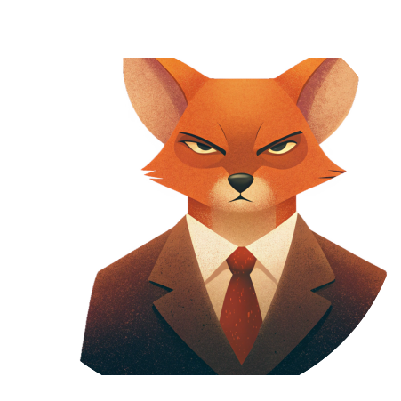

<template id="citizens-stage-template">
    <div id="citizens-stage-screen" class="screen-container game-layout">
        <!-- Прогресс-бар -->
        <div class="progress-bar-container">
            <div id="progress-bar" class="progress-bar"></div>
        </div>

        <!-- Левая часть -->
        <div class="left-column">
            <h2 class="screen-title">Выбор предателя: День</h2>

            <div>
                <h3>Доступные игроки:</h3>
                <div id="target-players-list" class="players-list">
                    <!-- Динамически: список игроков -->
                    <!--                    <div>-->
                    <!--                        -->
                    <!--                        <p>мяу</p>-->
                    <!--                    </div>-->
                </div>
            </div>

            <div class="bottom-section centered">
                <button id="confirm-target-button" class="btn btn-primary" disabled>Подтвердить выбор</button>
            </div>
        </div>

        <!-- Правая часть -->
        <div class="right-column">
            <h3>Чат выживших</h3>
            <div id="chat-section" class="chat-section">
                <div id="chat-messages" class="chat-messages"></div>
                <div class="chat-input-group">
                    <input type="text" id="chat-input" placeholder="Введите сообщение..." style="width: auto;">
                    <button id="chat-send" class="btn btn-secondary full-width-btn">Отправить</button>
                </div>
            </div>
        </div>
    </div>
</template>
